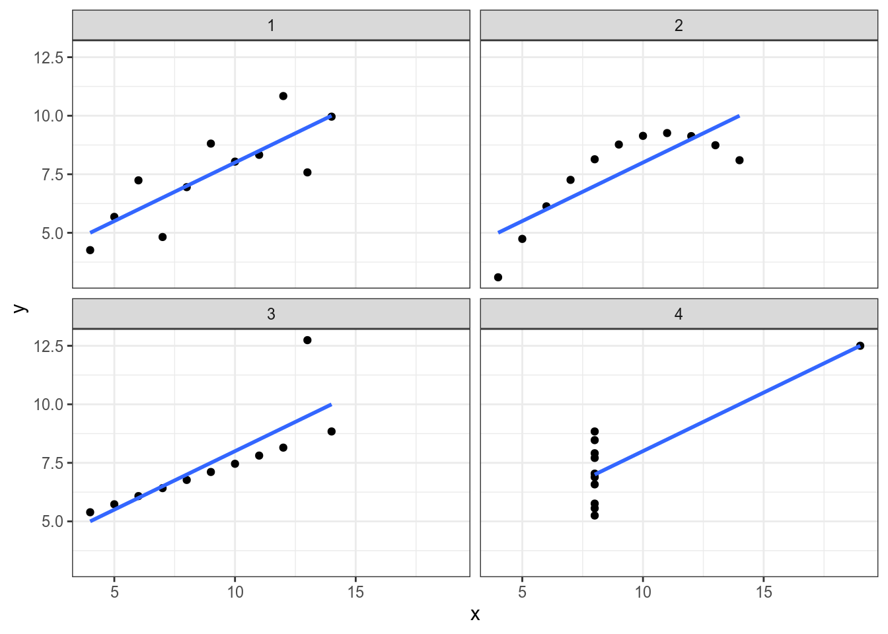

4 Data visualisation: ggplot2
4.1 Why visualise data?
4.1.1 Anscombe’s Quartet
In Anscombe, F. J. (1973). “Graphs in Statistical Analysis” there were the following dataset:
quartet <- read_csv("https://raw.githubusercontent.com/agricolamz/DS_for_DH/master/data/anscombe.csv")
quartetquartet %>%
group_by(dataset) %>%
summarise(mean_X = mean(x),
mean_Y = mean(y),
sd_X = sd(x),
sd_Y = sd(y),
cor = cor(x, y),
n_obs = n()) %>%
select(-dataset) %>%
round(2)